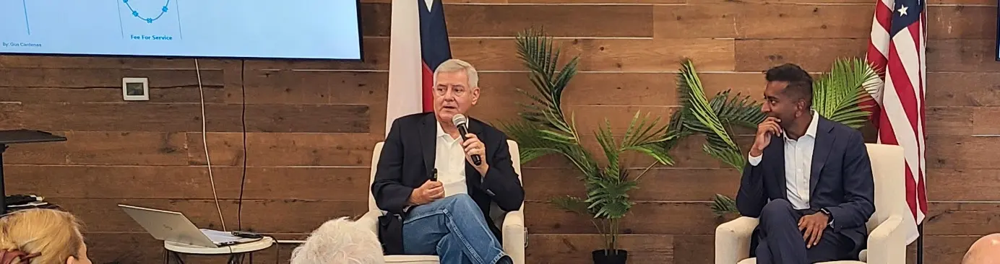
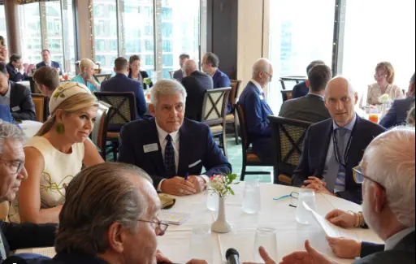
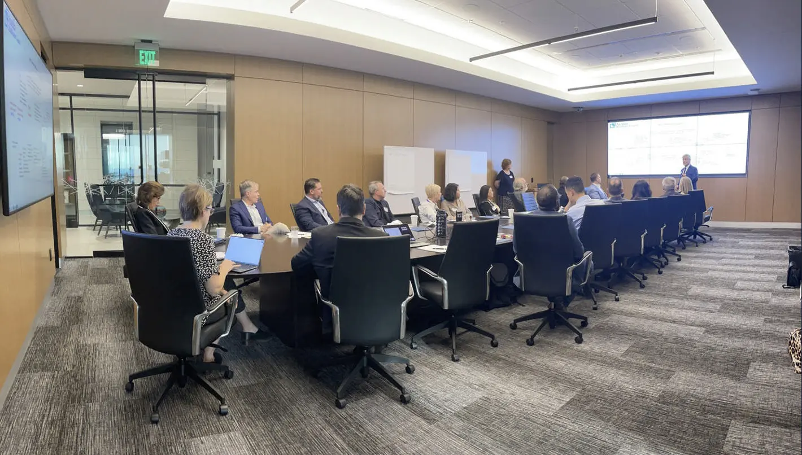
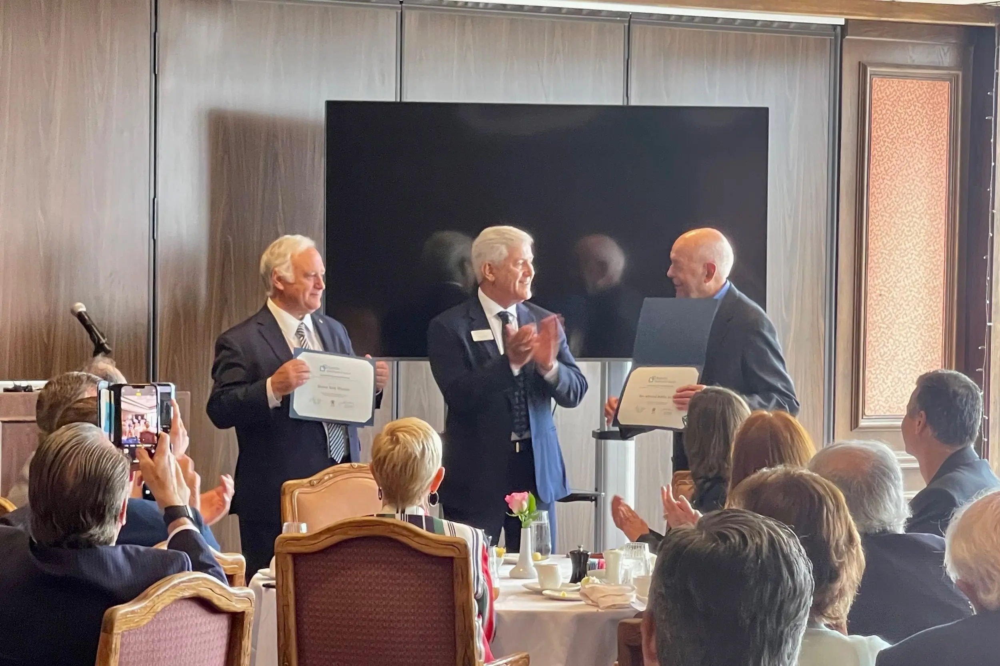
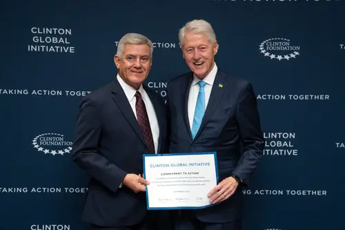

What Our Clients
Can Expect.
A focused, practical and collaborative engagement designed to
create real opportunities and lasting value in the U.S. market.
Clarity
A defined understanding of the opportunity, priorities, barriers and next steps.

Access
Qualified introductions to customers, partners, institutions and decision-makers relevant to the opportunity.

Experience
An experienced U.S.-based team that can represent the opportunity and support engagement on the ground.

Accountability
Defined deliverables, timelines, follow-through and engagement.

We don't measure progress by the number of introductions.
We measure it by whether the right opportunities move forward.